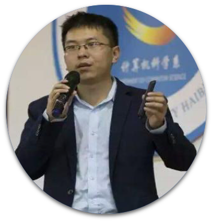
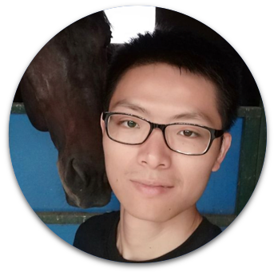
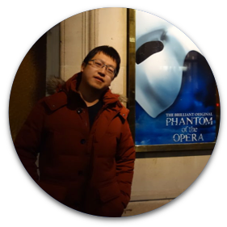

Speaker

Beijing

Qiangning Hong
Founder and CTO of einplus
演讲主题
My Python Road (tentative)
主题简介
缺
讲师简介
founder and CTO of einplus, has been programming for more than 30 years, 12 years of experience in the Internet industry, and currently in the commercial dialogue robot entrepreneurship. Former Chief Architect of Douban and Chief Architect of CreditEase Big Data Innovation Center. A veteran Python developer who is one of the founders of the Chinese Python User Group (CPUG). He is the first full-time employee of Douban, and responsible for the system architecture. He has experienced the process of watercress from 100,000 to hundreds of millions of PVs, and has accumulated a profound experience in large-scale website architecture. He has led the construction of Douban internal PaaS system DAE and Credit Suisse financial container cloud Lain, with rich experience in container cloud and microservice architecture. His current focus is on chatbot, cloud computing, container technology, microservices, and security technologies.

Ezio Melotti
CPython Core Developer
演讲主题
The Development Process of CPython
主题简介
Python is an open-source language where everyone can contribute. Over the years the workflow used by both contributors and core developers changed dramatically, from patches sent via email to pull requests sent on GitHub. With this talk I want to unveil what currently happens ''behind the scenes'' of CPython and how you can get involved and be part of the open source community that allows Python to be one of the most popular programming languages.
讲师简介
Ezio Melotti is a software engineer with almost 20 years of experience in software development and programming with several different languages. Born in Milan (Italy), he decided to move to Turku (Finland) in the year 2007, where he graduated and then taught at the Turku University of Applied Sciences. In 2009 he became CPython Core Developer and contributed over 1000 changesets over the years. He is also the maintainer of the bug tracker and the html package and did extensive work on the test suite, on the documentation, and on the standard library.
Leo Lee(debugtalk)
Leader of DJI test developement
演讲主题
Build an enterprise-level automated testing framework HttpRunner with Python open source ecosystem
主题简介
1. Python's ecology in the field of software testing
2. The birth background of HttpRunner
3. The development and design ideas of HttpRunner
4. Automated test program based on HttpRunner
5. Successful practice case based on HttpRunner
2. The birth background of HttpRunner
3. The development and design ideas of HttpRunner
4. Automated test program based on HttpRunner
5. Successful practice case based on HttpRunner
讲师简介
Leo Lee (debugtalk), DebugTalk Blogger, the author of HttpRunner. 7 years‘ experience in software testing industry, heavy Python enthusiasts, always committed to Python in software testing field of application and promotion. Embracing the Zen of Python, pursuiting of simplicity and elegance in code, as well as in life. Currently in DJI is responsible for testing and development work.

Xiang Zhang
CPython Core Developer / CPython Committer
演讲主题
What happened to my Python process?
主题简介
This speech will share the most frequently encountered problems in CPython development and the tools for debugging problems in your own work scenario; also, it will talk the thinking about Python debugging and monitoring in future.
讲师简介
updating…
nightynight
MSRA
演讲主题
Implementation ideas of Python JIT
主题简介
Extend the use of cpython vm through metaprogramming to improve code reuse rate, abstract ability and runtime program execution efficiency. Also to introduce How to introduce JIT and type checking tools in a compatible cpython ecosystem.
讲师简介
From MSRA, has very deep research on features and underlying of Python language

Gashero
Independent developer
演讲主题
New Pose of Unlock GIL
主题简介
This speech will systematically introduce the causes of GIL and the side effects it brings. And bring a complete set of solutions to properly circumvent GIL to better improve the performance of Python online.
讲师简介
He started learning Python in 2005 and have shared millions of words of Python notes and translated documents. Former Tudou Assistant Architect, former Crust Network Founding Technical Director, former deepglint engineer, former RoboTerra Software Engineering Director. Fans of Radio/model/robot.
Lusheng Lv
Ant Financial Backend development
演讲主题
How to use Rust in Python
主题简介
This topic will share the current status and ideas for useing Rust code in Python.
讲师简介
Python Backend Developer at day, Rustacean at night. Author of PyO3, active in the Python community and the Rust community, also enthusiastic and hardworking in open source enthusiast.

Gangqiang Yao
Technical Leader of Community Division of Zhihu
演讲主题
Subject to be determined
主题简介
updating
讲师简介
Joined Zhihu in 2013, he was the head of the home feed stream engineering technology. During the project of the feed stream, the response time P95 was reduced from 1.6s to 700ms through the optimization of the framework. The stability was improved from 99.9% to 99.99% through the development specification. Responsible for the Community Architecture Group in 2018, leading the team to rewrite the main business modules with Golang, saving machine resources 75%

Xiangyu He
Python engineer of TCL Internet Division
演讲主题
Understand of Python MRO
主题简介
Python is a programming language with multiple inheritance capabilities. In object-oriented inheritance, the invocation of methods is closely related to the order of inheritance. Python uses the C3 linearization algorithm to calculate the MRO as the only criterion for the method call sequence, and understanding MRO can help us in Python object-oriented programming.
讲师简介
updating
Qingcai Cui / Jingmi
Big Data Engineer of Microsoft China
演讲主题
Robust and efficient web crawler
主题简介
This presentation will introduce the knowledge and skills of using Python for web crawler development in five aspects: crawling, parsing, storing, anti-climbing, and acceleration. It introduces how to take different measures to efficiently capture data in different scenarios, including Web crawling, App crawling, data storage, agent purchasing, verification code cracking, distributed crawling and management, intelligent parsing, etc., and also introduce some commonly used toolkits in combination with different scenarios. All of the speech content are the summary of the experience of the speaker since the web crawler research process.
讲师简介
Qingcai Cui, master of Beihang University, author of 《Python3网络爬虫开发实战》, Blog bloggers of cuiqingcai.com, the number of blog reading about Crawler has exceeded one million, Big Data Engineer of Microsoft China, lecturer of Tianshan Intelligent and Netease Cloud Classroom, and currently engaged in the research of conversational chat direction.

Jinhong Lee
Main engineer of Code doctor
演讲主题
Artificial Intelligence Case Study Sharing - Image
主题简介
1.Basic knowledge and trends of artificial intelligence
2.Picture classification and fine-tuning practical case
3.Face recognition direction practical case
4.Numerical analysis direction practical case
2.Picture classification and fine-tuning practical case
3.Face recognition direction practical case
4.Numerical analysis direction practical case
讲师简介
Jinhong Lee, main engineer of Code doctor studio, founder of the big snake intelligence, chief artificial intelligence scientist of Beijing Pai Network Software, has released two video tutorials on the CNTK deep learning framework, has published two best-selling books, 《深度学习之Tensorflow：入门、进阶与实战》and《python带我起飞：入门、进阶、商业实战》.
Xuye Qin
Computing Platform Department of Alibaba
演讲主题
Mars - Matrix-based unified computing framework
主题简介
Mars - Matrix-based unified computing framework, the goal to bring the ecology of PyData to a distributed execution environment, currently supports the Numpy interface, can perform multidimensional array operations in a distributed environment, it supports running on the GPU, and supports two-dimensional sparse matrices. Currently, Mars is compatible with 70% of the common Numpy interfaces. This sharing session introduces our current work, introduces Mars'' implementation principles, and looks ahead to future superstructures including DataFrame and machine learning.
讲师简介
His main job is to combine the Python ecosystem with the big data environment. The past work involved writing the pyodps DataFrame framework, which allows users to write code similar to pandas, but supports execution on MaxCompute bi data platforms, pandas, and traditional databases. His current work is mainly Mars, which is a matrix-based unified computing framework. Its goal is to bring the PyData ecosystem to a distributed execution environment. Currently, it supports the Numpy interface and can perform multidimensional array operations in a distributed environment. It supports running on the GPU. And supports two-dimensional sparse matrices. Pandas and scikit-learn will be distributed in the future.

Shun Wang
Cloud Advisor of Google
演讲主题
Cooking with Google TPUv2: How to train and deploy your models on Google Cloud.
主题简介
1.Introduction of TPU;
2.A tutorial of training/inference a DL/ML model on Google TPUv2 2.1 example 1, 2.2 example 2;
3.Difference between TPUv2 and GPU and trouble shooting of TPUv2. 4 Benchmark of TPUv2 and GPU
2.A tutorial of training/inference a DL/ML model on Google TPUv2 2.1 example 1, 2.2 example 2;
3.Difference between TPUv2 and GPU and trouble shooting of TPUv2. 4 Benchmark of TPUv2 and GPU
讲师简介
Python/Go/C++ developer, responsible for the landing and best practices of cloud computing, big data and deep learning technologies in large enterprises. He has worked for artificial intelligence unicorn Face++ and AWS, Oracle and other companies. The main architecture and developer of the face recognition system for the coffee-free unmanned convenience store, AWS Big Data Expert EMR Subject Matter Expert.
Xiaoyou Chen
Founder of Shanghai Wayne Kailuan Software Technology Co., Ltd.
演讲主题
Python in Blockchain Asset Management
主题简介
The new asset types (digital currency and vouchers) brought about by the blockchain technology revolution and its decentralized infrastructure are bringing dramatic changes to the global asset management industry. With its mature large-scale financial application background and active and active user community, the Python language has become the preferred solution in the blockchain asset management business. This presentation aims to share the application of Python in the various ecological aspects of blockchain asset management and to explore future directions.
讲师简介
Xiaoyou Chen, founder of Shanghai Wayne Kailuan Software Technology Co., Ltd., has worked as a quantitative trader and fund manager in large-scale quantitative private equity funds and developed the vn.py quantitative trading framework, which is currently one of the world''s largest open source quantitative trading projects (Github Star 6071). His current focus is mainly on development of quantitative trading systems in the blockchain and digital currency sectors.

Yizhe
PING AN / Data scientist
演讲主题
Evolution Path of Enterprise Data Science Platform Based on Python Ecosphere
主题简介
1. The overall evolution and architecture of the data science platform from 0 to 1
2. 0.25 era - "Python + Hive + Shell" mixed programming to solve the cumbersome human ETL
3. 0.5 era - "Django+ElasticSearch" increased customer search and BI analysis support
4. 0.75 era - "Django+PyHive+PySpark" increases the operation and machine learning task flow of big data clusters
5. 1.0 era - Scheduler scheduling integration and platform, cluster micro-service
6. Various external technical resistances and pitfalls encountered in the evolution path from 0 to 1
7. Summary and outlook'
2. 0.25 era - "Python + Hive + Shell" mixed programming to solve the cumbersome human ETL
3. 0.5 era - "Django+ElasticSearch" increased customer search and BI analysis support
4. 0.75 era - "Django+PyHive+PySpark" increases the operation and machine learning task flow of big data clusters
5. 1.0 era - Scheduler scheduling integration and platform, cluster micro-service
6. Various external technical resistances and pitfalls encountered in the evolution path from 0 to 1
7. Summary and outlook'
讲师简介
One of the executors of the AI Empowerment Program, working as a guest lecturer in cloud computing and big data related fields in several universities in Shanghai, first contact with Python in 10 years, and fully embraced Python and deepened the data science community in 15 years.

Ernest He
CTO of ifanr
演讲主题
Form 0-1, create a Serverless platform by using Python
主题简介
In recent years, PWA and miniprogram become more and more popular in app developments; in the mean while BaaS and FaaS also be loved by more and more developers. In this session, the speaker will introduce how ifanr team build a serverless platform which designed for miniprogram developers, using Python and Django.
讲师简介
Start-up & Architect @ Guangzhou, China CTO @ ifanr.com, in charge of cloud.minapp.com, a serverless platform designed for miniprogram apps.Art lover / addicted in creative activities.

Taoxun Kong/K0r4dji
Chief security officer(CSO) of digapis
演讲主题
Chief security officer(CSO) of digapis
主题简介
With the increasing number of Internet attacks, network information security has gradually attracted people's attention. Python has become the most popular programming language for hackers. Whether it is network attack or defense or software cracking, Python is very simple to help security personnel accomplish many things, such as: automation Attacks, etc. Through this topic, you can learn about Python's things in the information security field.
讲师简介
Taoxun Kong / K0r4dji, CSO of Beijing Ding Niu Technology Co., Ltd., founder of Breaking Security Team, which is a famous information security team in domestic, book expert consultant of People Post Press-Asynchronous Community-Information security field.

Jintao Zhang
Senior Devops of NetEase
演讲主题
CI/CD Practice Based on Docker
主题简介
With the formation of ecosystems such as containerization and cloud native, the value of CI/CD in the software development process is becoming more and more prominent. More and more companies need to transform and optimize this, but thousands of people have thousands of faces, transformations and practices often have many problems, both in the personnel and in the tool chain. This time is mainly to share the best practices we have summarized in production, and to analyze the problems encountered in this process, and to share in detail the technical details, as well as the optimization, problem analysis, and architecture in the process and the reflections and conclusions we have made, I hope that everyone can inspire them and promote their respective development in the production environment.
讲师简介
Jintao Zhang, senior devops developer of NetEase, responsible for construction of containerization and automated operation and maintenance system.

Liangju Deng
metasota / Director of Engineering
演讲主题
Taking history as a guide: Understand the Web core technology system in half an hour
主题简介
The development of Web technology has been quite complicated so far. The related projects are “small and no internal, and they are nothing short”. Various front and rear end frames and middlewares are numerous and numerous. Many introductory developers have even worked for three or five years, limited to the use of a certain two frameworks, and regarded their own fancy framework as a standard. They are only skilled in the interface after the framework is packaged. Why does the framework exist and why in that design? When encountering difficult problems, and how to solve and optimize, it is not enough. This topic is based on the history of Web technology development, helping listeners to clearly understand the role and key points of Web-related core technologies, so that they can have clear goals and clear ideas when solving various problems encountered in learning work in the future.
讲师简介
He has been working for more than 5 years, focusing on the Python technology stack server architecture design and framework development. He used to be the R&D engineer of the Lea cloud computing PaaS platform and the head of the data department of Cheetah Mobile AILab. He is currently the director of engineering of the metasota. In the spare time, he often exchange ideas and guide new people in the technical community with Python developers.

Grey Li
member of Pallets Team
演讲主题
The Free Flask
主题简介
As a popular Python web framework, many developers like Flask''s simplicity and flexibility, and often compare it to bulky Django. Based on these characteristics, we can say that Flask is free, and free Flask will make your web development more free. Specifically, the free here is manifested in many aspects, including the extension of program functions, the definition of routes, the organization of project structures, and the design of program patterns.
讲师简介
The author of Python Web Development with Flask.

Xiaomao Zhou
Development Manager of iRain Parking
演讲主题
Application of Python in embedded system development
主题简介
This speech focuses on the work experience of speecher and illustrates the practical use of Python in the embedded software development process. The speech details will be divided into the following sections
1. What is included in embedded development, including development of driver layer and application layer.
2. What Python can do in embedded development. Python can be used in embedded development of application layer, including background web development, instant communication development, GUI development, etc.
3. Compare the advantages of Python development over traditional embedded development.
4. Briefly explain the basic process of embedded development using Python, and mainly explain the construction process of Python development environment.
5. Finally, showing the specific application intelligent parking system management display and PLC communication read and write operation display.
1. What is included in embedded development, including development of driver layer and application layer.
2. What Python can do in embedded development. Python can be used in embedded development of application layer, including background web development, instant communication development, GUI development, etc.
3. Compare the advantages of Python development over traditional embedded development.
4. Briefly explain the basic process of embedded development using Python, and mainly explain the construction process of Python development environment.
5. Finally, showing the specific application intelligent parking system management display and PLC communication read and write operation display.
讲师简介
Working as development manager in iRain Parking, also worked in Hangzhou Hikvision. After working, he has been engaged in embedded software development, mainly involving camera sensor driver development, intelligent access control system development and intelligent parking lot software development.
Hui Chang
Consultant of ThoughtWorks
演讲主题
What can be done with Python — Implement a web application that includes an identity authentication module
主题简介
Building a website is a very fulfilling thing. In the eyes of most people who are interested in driving development, the simple use of Python and its components is complicated by the fact that each module is built into a complete set of solutions. Now that OAuth2.0 and OIDC are standard, is it useful to integrate an identity authentication module into a website? AWS provides some good ideas on development costs, development cycles, and controllability. So, how should we use building blocks to build web applications step by step? Stay tuned.
讲师简介
She has provided consulting and delivery services for microservices and website construction at home and abroad. I am good at testing drive development and software architecture evolution. Passionate about technology, passionate about agile practices, and a practitioner of continuous delivery.
Wentian Zhao
Penetration Test Engineer of DigApis
演讲主题
Python application in cryptography
主题简介
Briefly introduce modules and functions that involve cryptography in Python
讲师简介
Beijing University of Posts and Telecommunications - Network Information Security Winter Camp - Senior Lecturer, Guangzhou University - Network Information Security Summer Camp - Senior Lecturer, Domestic Famous Information Security Research Team - Core Member of Dawning Team, Beijing Mingyuan University - Network Space Advanced Technology College - Senior Lecturer, Freebuf-DigApis Information Security Column Leader
Leezhuo Guo
IT Veteran / Fan of Python
演讲主题
What about our pension?
主题简介
Add extra protection to yourself by means of fixed investment
1.What is the automatic investment plan (AIP)?
2.Advantages of the automatic investment plan (AIP)
3.Shortcomings of the automatic investment plan (AIP)
4.Advantage about programmers do the automatic investment plan (AIP)
5.How to make automatic investment plan (AIP) with Python
1.What is the automatic investment plan (AIP)?
2.Advantages of the automatic investment plan (AIP)
3.Shortcomings of the automatic investment plan (AIP)
4.Advantage about programmers do the automatic investment plan (AIP)
5.How to make automatic investment plan (AIP) with Python
讲师简介
He joined IT in 2000 and has been engaged in communication/network security for a long time. He has passed the qualifications of well-known foreign companies, also participated in the entrepreneurial boom. He is working on an information security company currently. In his spare time, he is committed to popularizing Python programming, making Python a tool that everyone can use, organizing multiple Python public interest qq groups, and spreading introductory courses through live broadcast. H e is interested in quantitative investment, and experienced losses in stocks, futures, cryptocurrencies and other varieties, and focused on fund investment, risk reduction, and stable income gradually.
Shanghai
Xiaolei Wang
ThoughtWorksAlgorithm scientist
演讲主题
Speech topic: Limitations of machine intelligence, from image recognition to natural language processing
主题简介
AI is math. Though we do not have to prove something mathematically when creating a deep neuro network, we are using statistical methods to learn the patterns from the data. Unsurprisingly, we've done some unseen assumption behind the model that will never lead to the result that an intelligence could understand and generalize about the world. Today we are going to discuss about the limitations of machine intelligence based on some real world projects, from image recognition to natural language processing, about both data and models.
To python players, this talk may answer the following questions:
1. How to know whether my problem can be solved by Artificial Intelligence today?
2. How to design the indictors for a real-life problem?
3. How to know if a model is 'good enough'?
4. How much data is enough to train a model?
5. Tips and tricks when using Python for deep learning.
讲师简介
Wang Xiaolei, the chief algorithmic scientist of the China Consulting team, has provided data and algorithm related consulting services in many domestic and overseas projects for a lot of companies, including banks and insurance companies, financial services institutions, real estate advertising companies, consumer goods companies, educational service organizations, and communication technology companies. It mainly includes mathematical modeling and optimization, unstructured data processing, natural language processing, image recognition, etc. It has end-to-end experience in human-computer interaction and precision marketing, and truly realizes the value of customized mining data.

Xiaojie Zhang
NvidiaDeep learning architecture engineer
演讲主题
Getting started with PyTorch
主题简介
1. Introduction to PyTorch
Introducing the characteristics of PyTorch dynamic graphs, and comparing PyTorch with other deep learning frameworks.
2. Introduction to new features of PyTorch (mainly for version 0.4)
Introducing the new features of PyTorch 0.4 (which may include 1.0 if 1.0 is released) to help the programmers migrate the code to the new version.
3. How to build a simple neural network using PyTorch
Introducing the simple use of PyTorch (use of nn.Module)
4. PyTorch's parallel training
Describing how to use the multi-GPU to train the PyTorch model (using the apex library)
5. Deploy PyTorch model with ONNX
Describing how to solidify the model with the ONNX format and deploy the model on Caffe2
6.Tips on PyTorch
Introducing the various pits that you may encounter when writing PyTorch
7. Summary
讲师简介
Now working as a deep learning architecture engineer at NVIDIA, he is responsible for the optimization of GPU-based deep learning models. The main application scenario of the Python at work is to build the deep learning model. The main deep learning frameworks used are PyTorch and TensorFlow. Hope to share the experience on PyTorch's with everyone in PyCon.
Jon
Founder
演讲主题
realizes Ethereum with Python from scratch
主题简介
The goal of using Python to implement Ethereum from scratch is to disassemble the Ethereum "rocket", to find out, and then reassemble it with Python. Our focus is not on recreating an Ethereum, but on getting an experience in the process. This series can be roughly divided into four chapters, namely P2P network protocol, blockchain structure, consensus calculation and the smart contract. This topic explores the P2P network protocol component, and we will try to connect to the Ethereum network and communicate smoothly in python.
讲师简介
Continuous entrepreneurs, more than 10 years experience in Web application architecture, mainly writing Python/Rust/JavaScript/Haskell language, Ethereum early fans and evangelists, open source software supporters. The current focus is on blockchain payment projects. Yield.IM
Xiaoyou Chen
Founder of Shanghai Wayne Kailuan Software Technology Co., Ltd.
演讲主题
Python in blockchain asset management
主题简介
Theme introduction:The new asset types (digital currency and vouchers) brought about by the blockchain technology revolution, as well as its decentralized infrastructure, are bringing dramatic changes to the global asset management industry. With its mature large-scale financial application background and active user community, Python language has become the preferred solution in the blockchain asset management business. This presentation aims to share the application of Python in the various ecological aspects of blockchain asset management and to explore future directions.
讲师简介
Founder of Shanghai Wayne Kailuan Software Technology Co., Ltd., ever served as a quantitative trader and fund manager in large-scale quantitative private equity funds, developed the vn.py quantitative trading framework, which is currently one of the world's largest open source quantitative trading projects ( Github Star 6071). The current work focus is on the development of quantitative trading systems in the blockchain and digital currency sectors.

Jiayuan Zhang
IQIYIBackend development engineer
演讲主题
Type Hints Best Practices
主题简介
1. Introduction to type system, comparison of static type and dynamic type
2. What is Type Hints
3. Why do I need to use Type Hints?
4.Some ways to use Type Hints
5. Some problems with Type Hints and the improvements in Python 3.7
6. How to start with Type Hints in a real project
7. Continuous integration of mypy for type checking
8. The future of Type HInts, CPython runtime optimization? JIT?
讲师简介
Now working as a backend development engineer (Python) at iQiyi, 4 years of Python coding experience, and mainly use Python for web development at work. In this PyCon, Mr. Zhang will share some experience of using Type HInts in real projects.

Laiqiang Ding
Alibaba Cloud's log serviceShanghai team leader
演讲主题
Extend Jupyter/IPythonNB to empower your cloud service
主题简介
Jupyter (IPython Notebook) is cool and popular. Except for All-takenism, it seems difficult to extend Jupyter? This topic is an easy-to-understand example of how to extend Jupyter to link your cloud services, optimize the output of services, and make Jupyter smarter for your projects and customers.
讲师简介
Worked as an architect in Splunk (the first purely data-listed company on NASDAQ in the US) and being in this field for 10+ years, Mr. Ding has a wide range of technical interests. He shared 5 well received topics at the PyCon 2015/2016 conference, covering the Big data analysis and Processing visualization, Python functional programming / design pattern, Python big data scheduling engine, Pythin core injection technology and other topics, etc.
Xintao Lai
Ant FinancialSite Reliability Engineer
演讲主题
Interfaces and protocols in the Python culture
主题简介
Why is the length of the object being len() instead of obj.length() ? What is the difference between an iterator and an iterable object? Why do we rarely use design patterns when writing Python code? Behind this it is the idea of "protocol" in the Python language. This talk will discuss how to understand the protocol in Python, what is the design idea, and how to write Python code to implement this idea.
讲师简介

Junhao Ding
iwgameDevOps
演讲主题
Pyenv, from entry to giving up - Python multi-version multi-environment combat
主题简介
- Python multi-version, multi-environment coexistence analysis
- traditional solutions
- Pyenv advantage
- Did you install Pyenv right?
- Best practices of Pyenv
讲师简介
The web name of the speechmaker is ITXiaoPang. He's the founder of the open source sky website. He has been programming since 2003.He is familiar with many languages, but loves Python only. Currently working on Python's operation and maintenance in a well-known game company.
Jiyoon Lim
CoupangData Analyst
演讲主题
Python - Machine Learning vs Human Learning
主题简介
The topic of my speech is about the comparison between a non-Pythonic way and a Pythonic way of approaching business problems. As I switched from a business side to a technical field, I have experienced how two sides differ in solving business problems. I will cover the actual problems needed to be solved on FC Network Analysis using K-Means and how pro Excel users would approach this problem.
讲师简介
Work as a Data Analyst at an SCM Data Science team at an ecommerce company. The team analyze everything related to SCM plus some of FC related topics. Getting to use and learning about Python on a daily basis has been a great experience!

演讲主题
主题简介
讲师简介
Shenzhen
Qiangning Hong
爱因互动创始人兼CTO
演讲主题
这16年来我从Python学到了什么
主题简介
...
讲师简介
founder and CTO of einplus, has been programming for more than 30 years, 12 years of experience in the Internet industry, and currently in the commercial dialogue robot entrepreneurship. Former Chief Architect of Douban and Chief Architect of CreditEase Big Data Innovation Center. A veteran Python developer who is one of the founders of the Chinese Python User Group (CPUG). He is the first full-time employee of Douban, and responsible for the system architecture. He has experienced the process of watercress from 100,000 to hundreds of millions of PVs, and has accumulated a profound experience in large-scale website architecture. He has led the construction of Douban internal PaaS system DAE and Credit Suisse financial container cloud Lain, with rich experience in container cloud and microservice architecture. His current focus is on chatbot, cloud computing, container technology, microservices, and security technologies.
Chengdu
Qiangning Hong
爱因互动创始人兼CTO
演讲主题
这16年来我从Python学到了什么
主题简介
...
讲师简介
founder and CTO of einplus, has been programming for more than 30 years, 12 years of experience in the Internet industry, and currently in the commercial dialogue robot entrepreneurship. Former Chief Architect of Douban and Chief Architect of CreditEase Big Data Innovation Center. A veteran Python developer who is one of the founders of the Chinese Python User Group (CPUG). He is the first full-time employee of Douban, and responsible for the system architecture. He has experienced the process of watercress from 100,000 to hundreds of millions of PVs, and has accumulated a profound experience in large-scale website architecture. He has led the construction of Douban internal PaaS system DAE and Credit Suisse financial container cloud Lain, with rich experience in container cloud and microservice architecture. His current focus is on chatbot, cloud computing, container technology, microservices, and security technologies.
Hangzhou
Qiangning Hong
爱因互动创始人兼CTO
演讲主题
这16年来我从Python学到了什么
主题简介
...
讲师简介
founder and CTO of einplus, has been programming for more than 30 years, 12 years of experience in the Internet industry, and currently in the commercial dialogue robot entrepreneurship. Former Chief Architect of Douban and Chief Architect of CreditEase Big Data Innovation Center. A veteran Python developer who is one of the founders of the Chinese Python User Group (CPUG). He is the first full-time employee of Douban, and responsible for the system architecture. He has experienced the process of watercress from 100,000 to hundreds of millions of PVs, and has accumulated a profound experience in large-scale website architecture. He has led the construction of Douban internal PaaS system DAE and Credit Suisse financial container cloud Lain, with rich experience in container cloud and microservice architecture. His current focus is on chatbot, cloud computing, container technology, microservices, and security technologies.